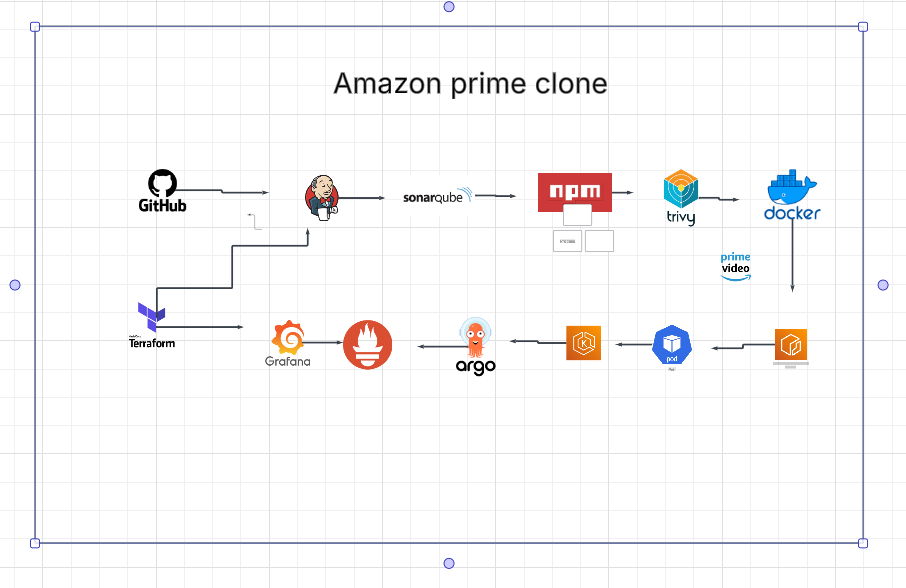

Amazon Prime Web App Clone Deployment
Developed a full CI/CD pipeline using Jenkins, Terraform, and Kubernetes on AWS. Integrated security scanning, monitoring, and automated scaling.


Cloud Computing & DevOps Engineer
Developed a full CI/CD pipeline using Jenkins, Terraform, and Kubernetes on AWS. Integrated security scanning, monitoring, and automated scaling.
Built a cloud-native web application integrating Google Maps API and Google Cloud services to locate e-waste recycling centers, complete with a leaderboard system.
Designed and deployed a scalable three-tier architecture using AWS services including VPC, EC2, ALB, and Aurora MySQL, with secure networking and automated monitoring.

Automated the end-to-end CI/CD pipeline for a Java application using Jenkins, Docker, and Kubernetes, leveraging Terraform for infrastructure provisioning.